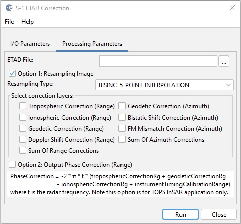

| ETAD Correction for Sentinel-1 Products |
|
The operator applies the ETAD correction to Sentinel-1 TOPS SLC, Stripmap and GRD products. The Extended Timing Annotation Dataset (ETAD) for Copernicus Sentinel-1 is a new auxiliary product developed by ESA (with DLR as contractor), providing users with corrections to improve geometric accuracy of Sentinel-1 Products. For Sentinel-1 TOPS SLC images, the geometric accuracy can be improved to centimetric levels. The product contains analysis-ready layers for removing the atmospheric path delays, the solid Earth tidal deformation, and the Sentinel-1 system specific effects related to the IPF SAR processor.
The operator currently performs the ETAD correction in two ways:
The second option above is for TOPS SLC product only and for InSAR application. The phase correction is computed by the following equation:
PhaseCorrection = -2 * π * f * (troposphericCorrectionRg + geodeticCorrectionRg - ionosphericCorrectionRg + instrumentTimingCalibrationRange)
where
f is the radar frequency. With this option, the ETAD correction is
converted to phase correction and output as a band. Users can perform
the ETAD correction to both the reference and secondary images, then
coregister them by running Back Geocoding operator where the phase
correction band is also resampled to the reference image grid. Finally
users can generate the interferogram by running Interferogram Formation
operator where the differential phase correction is computed and applied in the calculation of interferogram.

[1] S1-ETAD Project: Product definition Document, Doc. ID ETAD-DLR-PS-0002, Issue 2.4, Date 06.03.2023, Page 1 of 37.
[2] S1-ETAD: Product Format Specification Document, Doc. ID ETAD-DLR-PS-0014, Issue 1.8, Date 06.03.2023, Page 1 of 63.